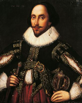

Viola is shipwrecked on the coast of Illyria and she comes ashore with the help of a Captain. She has lost contact with her twin brother, Sebastian, whom she believes to be drowned, and with the aid of the Captain, she disguises herself as a young man under the name Cesario and enters the service of Duke Orsino. Duke Orsino has convinced himself that he is in love with Olivia, who is mourning the recent deaths of her father and brother. She refuses to see entertainments, be in the company of men, or accept love or marriage proposals from anyone, the Duke included, until seven years have passed. Duke Orsino then uses 'Cesario' as an intermediary to profess his passionate love before Olivia. Olivia, however, falls in love with 'Cesario', setting her at odds with her professed duty. In the meantime, Viola has fallen in love with Duke Orsino, creating a love triangle: Viola loves Duke Orsino, Duke Orsino loves Olivia, and Olivia loves Viola disguised as Cesario.In the comic subplot, several characters conspire to make Olivia's pompous steward, Malvolio, believe that Olivia has fallen for him. This involves Olivia's riotous uncle, Sir Toby Belch; another would-be suitor, a silly squire named Sir Andrew Aguecheek; her servants Maria and Fabian; and her witty fool, Feste. Sir Toby and Sir Andrew engage themselves in drinking and revelry, thus disturbing the peace of Olivia's household until late into the night, prompting Malvolio to chastise them. Sir Toby famously retorts, "Dost thou think, because thou art virtuous, there shall be no more cakes and ale?" (Act II, Scene III).Sir Toby, Sir Andrew, and Maria plan revenge on Malvolio. They convince Malvolio that Olivia is secretly in love with him by planting a love letter, written by Maria in Olivia's handwriting. It asks Malvolio to wear yellow stockings cross-gartered—a colour and fashion that Olivia actually hates—to be rude to the rest of the servants, and to smile constantly in the presence of Olivia. Malvolio finds the letter and reacts in surprised delight. He starts acting out the contents of the letter to show Olivia his positive response. Olivia is shocked by the changes in Malvolio and agreeing that he seems mad, leaves him to be cared for by his tormentors. Pretending that Malvolio is insane, they lock him up in a dark chamber. Feste visits him to mock his insanity, both disguised as a priest and as himself.
1665-1730
Seba
Albertus Seba